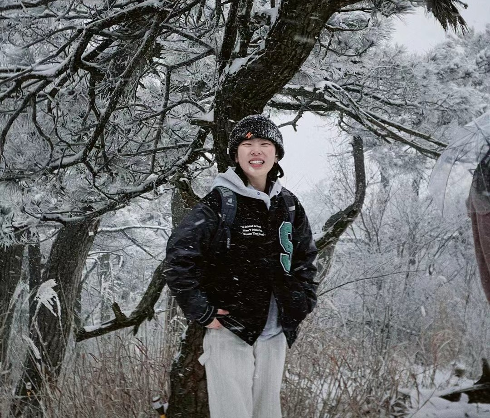

Case 01 / AI Assessment
AI 明检
从传统人工明检到 AI 客户智能体实战，帮助销售团队形成标准化、可复盘的能力提升闭环。
A dark editorial homepage with measured light, generous spacing, and quiet motion.
我想把你的首页从“信息平铺”改成更像设计档案首页： 少一点装饰，多一点比例、留白、字体和图像之间的张力。

作品区不做均分卡片，而做节奏：大项目承担叙事，小项目作为补充。 AI 明检可以作为第一张重点案例，浓缩为“业务痛点、AI 对话考核、报告闭环”三段。
从传统人工明检到 AI 客户智能体实战，帮助销售团队形成标准化、可复盘的能力提升闭环。
内部 AI 工作流平台，用产品文档、流程和截图呈现你的产品分析能力。
把轻量作品变成视觉索引，而不是和主项目抢权重。
这版动效策略：只保留入场 reveal、hover 上浮、媒体轻微光感。避免无限转圈、漂浮 UI、过密文字块。